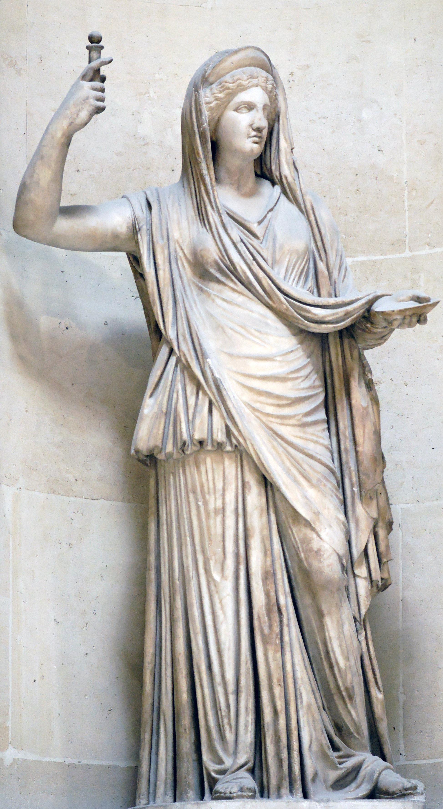

Mitología Griega
Crueles y volubles, apasionados y vengativos, celosos e inseguros, mezquinos y dementes: los habitantes del Olimpo representan el intento de los antiguos griegos de explicar el caos del universo a través de los defectos de la naturaleza humana. Como todas las deidades inventadas antes y después, estos dioses y diosas no son más que encarnaciones del solipsismo humano. (Por supuesto, los rayos solo pueden ser obra de un hombre gigante y furioso en el cielo… ¿qué otra explicación habría?). Sus batallas, disputas y conquistas sexuales no solo reflejan las miserias y grandezas humanas, sino que han moldeado para siempre el lenguaje y la narrativa occidental. A continuación, una selección de los nombres más destacados del panteón griego.
AFRODITA
Diosa del amor, el sexo y la belleza, Afrodita encarnaba un origen tan poético como grotesco: surgió de la espuma marina generada por los testículos cercenados de Urano, arrojados al océano por su hijo Cronos. (Sí, exactamente eso. ¿Acaso esperaban algo más delicado de los griegos?). Esta peculiar genealogía le otorga un matiz ligeramente más visceral a El nacimiento de Venus de Botticelli, donde su versión romana flota serena sobre las olas, ignorando convenientemente el sangriento prólogo de su existencia.
ATENEA
 Diosa de la sabiduría, la estrategia bélica y la razón, Atenea irrumpió en el mundo ya adulta y armada, brotando de la frente de Zeus tras este tragarse a su madre, Metis. (Un nacimiento mucho más refinado que el de Afrodita, aunque igual de violento). Protectora de héroes como Odiseo, Perseo y Heracles, intervenía con astucia en sus pruebas, prefiriendo la inteligencia a la fuerza bruta. Su legado perdura en el Partenón, majestuoso templo en la ciudad que lleva su nombre: Atenas. Los romanos, siempre poco originales, la rebautizaron como Minerva, pero sin lograr igualar su ingenio.
Diosa de la sabiduría, la estrategia bélica y la razón, Atenea irrumpió en el mundo ya adulta y armada, brotando de la frente de Zeus tras este tragarse a su madre, Metis. (Un nacimiento mucho más refinado que el de Afrodita, aunque igual de violento). Protectora de héroes como Odiseo, Perseo y Heracles, intervenía con astucia en sus pruebas, prefiriendo la inteligencia a la fuerza bruta. Su legado perdura en el Partenón, majestuoso templo en la ciudad que lleva su nombre: Atenas. Los romanos, siempre poco originales, la rebautizaron como Minerva, pero sin lograr igualar su ingenio.
ARTEMISA
 Diosa de la caza, los bosques y los animales salvajes, Artemisa recorría el mundo con su arco de plata y su séquito de ninfas, tan letal como protectora. Virgen por elección, castigaba sin piedad a quienes osaban violar su territorio (o a sus seguidoras). Su dualidad era única: desencadenaba la muerte con sus flechas, pero también velaba por los partos y la pureza de la naturaleza. Los romanos la llamaron Diana, pero jamás capturaron su esencia indómita. Incluso en el mármol —como en la escultura del Louvre—, su figura, acompañada de un ciervo o un perro de caza, transmite esa ferocidad serena que la hizo temida y venerada.
Diosa de la caza, los bosques y los animales salvajes, Artemisa recorría el mundo con su arco de plata y su séquito de ninfas, tan letal como protectora. Virgen por elección, castigaba sin piedad a quienes osaban violar su territorio (o a sus seguidoras). Su dualidad era única: desencadenaba la muerte con sus flechas, pero también velaba por los partos y la pureza de la naturaleza. Los romanos la llamaron Diana, pero jamás capturaron su esencia indómita. Incluso en el mármol —como en la escultura del Louvre—, su figura, acompañada de un ciervo o un perro de caza, transmite esa ferocidad serena que la hizo temida y venerada.
ARES
 Dios de la carnicería, el caos y el grito ahogado en el campo de batalla, Ares era el favorito de nadie, ni siquiera de su propio padre. Mientras Atenea —su media hermana más sabia y estratégica— encarnaba la guerra como un arte, él era pura brutalidad sin propósito: el tipo que se manchaba las manos de sangre mientras otros ganaban la guerra. Los espartanos, siempre prácticos, lo adoraban sin reparos: le ofrendaban prisioneros destrozados y, en un giro especialmente perturbador, perros sacrificados (porque, aparentemente, a este dios le encantaban los cachorros muertos. Clásico).
Los romanos, intentando darle un toque de respetabilidad, lo rebautizaron como Marte y hasta le inventaron un linaje noble. Pero no se equivoquen: bajo esa fachada de "padre de Rómulo", seguía siendo el mismo psicópata sediento de violencia.
Dios de la carnicería, el caos y el grito ahogado en el campo de batalla, Ares era el favorito de nadie, ni siquiera de su propio padre. Mientras Atenea —su media hermana más sabia y estratégica— encarnaba la guerra como un arte, él era pura brutalidad sin propósito: el tipo que se manchaba las manos de sangre mientras otros ganaban la guerra. Los espartanos, siempre prácticos, lo adoraban sin reparos: le ofrendaban prisioneros destrozados y, en un giro especialmente perturbador, perros sacrificados (porque, aparentemente, a este dios le encantaban los cachorros muertos. Clásico).
Los romanos, intentando darle un toque de respetabilidad, lo rebautizaron como Marte y hasta le inventaron un linaje noble. Pero no se equivoquen: bajo esa fachada de "padre de Rómulo", seguía siendo el mismo psicópata sediento de violencia.
APOLO
.jpg) Dios del sol, la profecía y las plagas (sí, plagas), Apolo era el favorito de papá Zeus y el terror de los mortales. Mientras su hermana gemela Artemisa reinaba en los bosques, él prefería los templos pulidos y los oráculos en trance. En Delfos, sus sacerdotisas inhalaban gases tóxicos que brotaban de las grietas del suelo —un detalle que la ciencia confirmó en 2001— y balbuceaban "profecías" entre convulsiones. Los griegos, claro, lo llamaban divina inspiración.
Pero no todo era caos: también era patrón de la música (inventó la lira) y la medicina (aunque podía mandarte una epidemia si se le antojaba). Los romanos lo adoptaron sin cambios —raro para ellos—, porque ¿quién se atrevería a "mejorar" a un dios que podía freírte con un rayo de sol o hacerte vomitar hasta morir?
Dios del sol, la profecía y las plagas (sí, plagas), Apolo era el favorito de papá Zeus y el terror de los mortales. Mientras su hermana gemela Artemisa reinaba en los bosques, él prefería los templos pulidos y los oráculos en trance. En Delfos, sus sacerdotisas inhalaban gases tóxicos que brotaban de las grietas del suelo —un detalle que la ciencia confirmó en 2001— y balbuceaban "profecías" entre convulsiones. Los griegos, claro, lo llamaban divina inspiración.
Pero no todo era caos: también era patrón de la música (inventó la lira) y la medicina (aunque podía mandarte una epidemia si se le antojaba). Los romanos lo adoptaron sin cambios —raro para ellos—, porque ¿quién se atrevería a "mejorar" a un dios que podía freírte con un rayo de sol o hacerte vomitar hasta morir?
DEMÉTER
_01.jpg) Diosa de la cosecha y el hambre voraz, Deméter era la fuerza detrás de cada espiga de trigo y cada invierno desolado. Cuando Hades secuestró a su hija Perséfone, no hubo plegaria ni sacrificio que la calmara: dejó que las cosechas se pudrieran y los hombres murieran de inanición (un recordatorio gentil de quién sostenía realmente la civilización). Mientras buscaba a su hija, disfrazada de anciana, se alojó en Eleusis y —en un arranque de gratitud por su hospitalidad— les enseñó los secretos de la vida y la muerte. Así nacieron los Misterios Eleusinos, donde los iniciados bebían cebada fermentada y alucinaban con la promesa de una vida después de la tumba (los griegos sabían que la religión necesitaba un buen show).
Los romanos la llamaron Ceres y le robaron el mito, pero nunca entendieron que Deméter no era una simple "diosa de la agricultura": era el terror y la ternura de un mundo que dependía de su estado de ánimo. Si Perséfone estaba en el Inframundo, la tierra se helaba; si volvía, florecían los campos.
Diosa de la cosecha y el hambre voraz, Deméter era la fuerza detrás de cada espiga de trigo y cada invierno desolado. Cuando Hades secuestró a su hija Perséfone, no hubo plegaria ni sacrificio que la calmara: dejó que las cosechas se pudrieran y los hombres murieran de inanición (un recordatorio gentil de quién sostenía realmente la civilización). Mientras buscaba a su hija, disfrazada de anciana, se alojó en Eleusis y —en un arranque de gratitud por su hospitalidad— les enseñó los secretos de la vida y la muerte. Así nacieron los Misterios Eleusinos, donde los iniciados bebían cebada fermentada y alucinaban con la promesa de una vida después de la tumba (los griegos sabían que la religión necesitaba un buen show).
Los romanos la llamaron Ceres y le robaron el mito, pero nunca entendieron que Deméter no era una simple "diosa de la agricultura": era el terror y la ternura de un mundo que dependía de su estado de ánimo. Si Perséfone estaba en el Inframundo, la tierra se helaba; si volvía, florecían los campos.
DIONISO
Dios del vino, el éxtasis y el caos ritualizado, Dioniso fue el enfant terrible del Olimpo, un recordatorio constante de que hasta Zeus tenía sus momentos de padre irresponsable. Nació dos veces: primero de su madre mortal, Sémele (a quien Zeus redujo a cenizas por error al mostrarse en todo su esplendor divino), y luego del muslo de su padre, donde fue cosido como un extraño proyecto de costura divina. Criado por las ménades —sus sacerdotisas enloquecidas—, creció para encarnar el lado oscuro de la fiesta: borracheras, orgías y el pequeño detalle de despedazar animales (o personas) en trance. Su símbolo era el toro, no por su fuerza, sino porque sus seguidores destrozaban uno vivo en sus rituales (los griegos entendían el team building de manera peculiar). Los romanos lo rebautizaron Baco, lo pusieron en una túnica elegante y pretendieron que solo era un dios del vino bonachón. Pero no se dejó domesticar: incluso en Roma, sus bacanales fueron prohibidas por "demasiado violentas". Dioniso, al fin y al cabo, no era solo el vino: era la resaca, el cuchillo en la oscuridad y la risa que precede a la locura.
HADES
 Dios del inframundo y experto en ghosting divino, Hades gobernaba su reino de sombras con la eficiencia burocrática de un CEO del más allá. A diferencia de sus dramáticos hermanos olímpicos, no perdía el tiempo con maldiciones vistosas ni escándalos amorosos (excepto aquel pequeño secuestro de Perséfone, claro). Su táctica fue impecable: un puñado de semillas de granada encantadas, y ¡voilà! —su esposa estaba legalmente obligada a pasar seis meses al año con él. Los griegos, maestros del marketing, lo pintaron como un villano, pero en realidad, Hades solo hacía su trabajo: mantener el equilibrio. Los muertos llegaban, las almas vagaban, y él ni siquiera se molestaba en juzgarlas (para eso estaban los tribunales de Minos, Éaco y Radamantis).
Los romanos, siempre copiando, lo fusionaron con Plutón y le añadieron un toque de riqueza subterránea (por los minerales, no por el glamour). Pero Hades nunca necesitó adornos: su poder residía en lo implacable. Mientras Zeus repartía rayos y Apolo recitaba poemas, él solo cruzaba los brazos y esperaba. Al fin y al cabo, todos —dioses y mortales— acabarían en su sala de espera eterna.
Dios del inframundo y experto en ghosting divino, Hades gobernaba su reino de sombras con la eficiencia burocrática de un CEO del más allá. A diferencia de sus dramáticos hermanos olímpicos, no perdía el tiempo con maldiciones vistosas ni escándalos amorosos (excepto aquel pequeño secuestro de Perséfone, claro). Su táctica fue impecable: un puñado de semillas de granada encantadas, y ¡voilà! —su esposa estaba legalmente obligada a pasar seis meses al año con él. Los griegos, maestros del marketing, lo pintaron como un villano, pero en realidad, Hades solo hacía su trabajo: mantener el equilibrio. Los muertos llegaban, las almas vagaban, y él ni siquiera se molestaba en juzgarlas (para eso estaban los tribunales de Minos, Éaco y Radamantis).
Los romanos, siempre copiando, lo fusionaron con Plutón y le añadieron un toque de riqueza subterránea (por los minerales, no por el glamour). Pero Hades nunca necesitó adornos: su poder residía en lo implacable. Mientras Zeus repartía rayos y Apolo recitaba poemas, él solo cruzaba los brazos y esperaba. Al fin y al cabo, todos —dioses y mortales— acabarían en su sala de espera eterna.
HERA
Reina del Olimpo, esposa de Zeus y eterna damnificada por las infidelidades de su divino consorte. Su templada elegancia escondía una venganza metódica: mientras Zeus transformaba cada aventura en un espectáculo mitológico (convertido en lluvia de oro, en cisne, en toro...), Hera dirigía su ira no hacia él —nunca hacia él—, sino hacia las mujeres mortales y los hijos bastardos que dejaba a su paso. Heracles, su víctima más célebre, sufrió una vida de pruebas imposibles diseñadas por ella (paradójicamente, forjando así su leyenda). Su especialidad era la crueldad creativa: transformar amantes en vacas, sembrar maldiciones generacionales y demostrar que, en el Olimpo, el matrimonio era un campo de batalla. Los romanos la rebautizaron Juno, revistiéndola de solemnidad matronal, pero no lograron ocultar su esencia: la diosa que prefirió perseguir a Io —convertida en ternera y atormentada por un tábano— antes que cuestionar el poder de su esposo.
HERMES
 Dios de los límites difusos y las contradicciones convenientes, Hermes era el multitarea del Olimpo: pastor de almas y de ganado, patrono de los ladrones y los comerciantes, inventor de la lira (que luego regaló a Apolo para compensar un robo de vacas). Veloz como el pensamiento, servía de mensajero divino —como en La Odisea, donde sus intervenciones eran tan útiles como ambiguas—. Los romanos lo llamaron Mercurio y lo redujeron a un dios de mercaderes, pero su esencia griega era más rica: el tramposo que guiaba a los muertos al Inframundo, el niño que robó el tridente de Poseidón por diversión, el único dios que podía cruzar todos los reinos sin consecuencias.
Dios de los límites difusos y las contradicciones convenientes, Hermes era el multitarea del Olimpo: pastor de almas y de ganado, patrono de los ladrones y los comerciantes, inventor de la lira (que luego regaló a Apolo para compensar un robo de vacas). Veloz como el pensamiento, servía de mensajero divino —como en La Odisea, donde sus intervenciones eran tan útiles como ambiguas—. Los romanos lo llamaron Mercurio y lo redujeron a un dios de mercaderes, pero su esencia griega era más rica: el tramposo que guiaba a los muertos al Inframundo, el niño que robó el tridente de Poseidón por diversión, el único dios que podía cruzar todos los reinos sin consecuencias.
POSEIDÓN
 Dios de los abismos, los corceles y las grietas que tragan ciudades, Poseidón gobernaba con el tridente en una mano y un rencor eterno en la otra. Los griegos lo veneraban tierra adentro —por sus terremotos— tanto como en la costa, porque sabían que su ira era tan impredecible como un tsunami. Su línea familiar era un catálogo de rarezas: de la sangre decapitada de Medusa nació Pegaso, el caballo alado; de su unión con una ninfa, el cíclope Polifemo, cuya ceguera a manos de Odiseo desató una venganza épica (La Odisea es básicamente un registro de turismo catastrófico por culpa de Poseidón).
Los romanos lo rebautizaron Neptuno, le pusieron un delfín decorativo y lo convirtieron en un símbolo de dominio marítimo. Pero el original griego nunca fue tan dócil: él era el que partía barcos, ahogaba héroes y, cuando se aburría, hacía brotar manantiales golpeando el suelo (como en Atenas, donde perdió contra Atenea por el patrocinio de la ciudad). Un dios para temer, no para celebrar.
Dios de los abismos, los corceles y las grietas que tragan ciudades, Poseidón gobernaba con el tridente en una mano y un rencor eterno en la otra. Los griegos lo veneraban tierra adentro —por sus terremotos— tanto como en la costa, porque sabían que su ira era tan impredecible como un tsunami. Su línea familiar era un catálogo de rarezas: de la sangre decapitada de Medusa nació Pegaso, el caballo alado; de su unión con una ninfa, el cíclope Polifemo, cuya ceguera a manos de Odiseo desató una venganza épica (La Odisea es básicamente un registro de turismo catastrófico por culpa de Poseidón).
Los romanos lo rebautizaron Neptuno, le pusieron un delfín decorativo y lo convirtieron en un símbolo de dominio marítimo. Pero el original griego nunca fue tan dócil: él era el que partía barcos, ahogaba héroes y, cuando se aburría, hacía brotar manantiales golpeando el suelo (como en Atenas, donde perdió contra Atenea por el patrocinio de la ciudad). Un dios para temer, no para celebrar.
ZEUS
 Rey de dioses y hombres, amante de tormentas y de tragedias conyugales. Con la ayuda de sus hermanos Hades y Poseidón, destronó a Cronos —el titán que se tragaba a sus hijos— e instauró un nuevo orden olímpico (donde, irónicamente, él repetiría los errores de su padre, solo que en forma de bastardos en lugar de banquetes caníbales). Dueño del rayo y las nubes, prefería usar su poder para seducir: se transformaba en lluvia dorada, en toro, en cisne… cualquier cosa con tal de engañar a alguna mortal desprevenida. Sus aventuras generaron héroes, monstruos y, en el caso de Helena de Troya, una guerra legendaria.
Hera, su hermana y esposa, lo enfrentaba con la furia de mil soles, pero Zeus nunca aprendió. Los romanos lo llamaron Júpiter, le pusieron un águila en la mano y lo presentaron como símbolo de justicia, pero la verdad era más simple: él era el caos con corona, un dios que gobernaba el cielo pero nunca su propio apetito.
Rey de dioses y hombres, amante de tormentas y de tragedias conyugales. Con la ayuda de sus hermanos Hades y Poseidón, destronó a Cronos —el titán que se tragaba a sus hijos— e instauró un nuevo orden olímpico (donde, irónicamente, él repetiría los errores de su padre, solo que en forma de bastardos en lugar de banquetes caníbales). Dueño del rayo y las nubes, prefería usar su poder para seducir: se transformaba en lluvia dorada, en toro, en cisne… cualquier cosa con tal de engañar a alguna mortal desprevenida. Sus aventuras generaron héroes, monstruos y, en el caso de Helena de Troya, una guerra legendaria.
Hera, su hermana y esposa, lo enfrentaba con la furia de mil soles, pero Zeus nunca aprendió. Los romanos lo llamaron Júpiter, le pusieron un águila en la mano y lo presentaron como símbolo de justicia, pero la verdad era más simple: él era el caos con corona, un dios que gobernaba el cielo pero nunca su propio apetito.